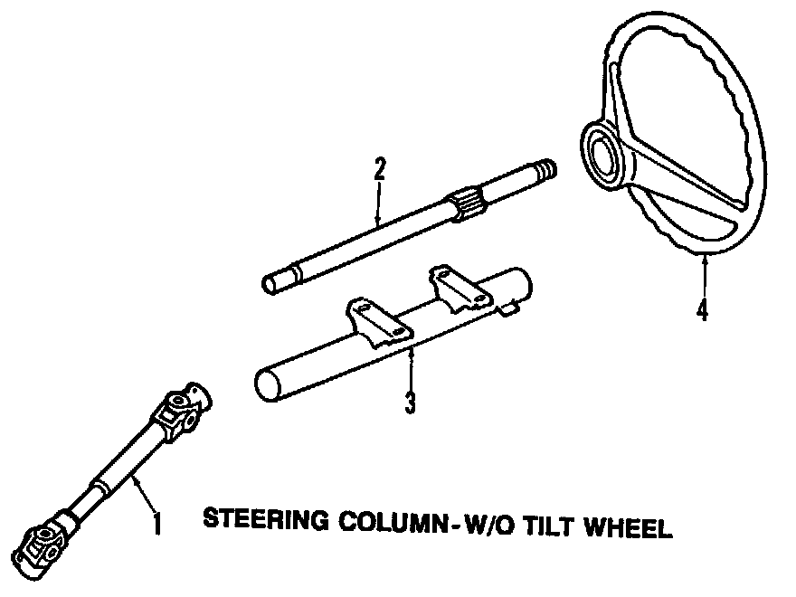

Operation CHARM
: Car repair manuals for everyone.
Home
>>
Volkswagen
>>
1997
>>
GTI (1H1) V6-2.8L (AAA)
>>
Parts and Labor
>>
Steering and Suspension
>>
Steering
>>
Images
Images
Steering Gear:
Steering Column, Without Tilt Wheel:

Steering Column, With Tilt Wheel: